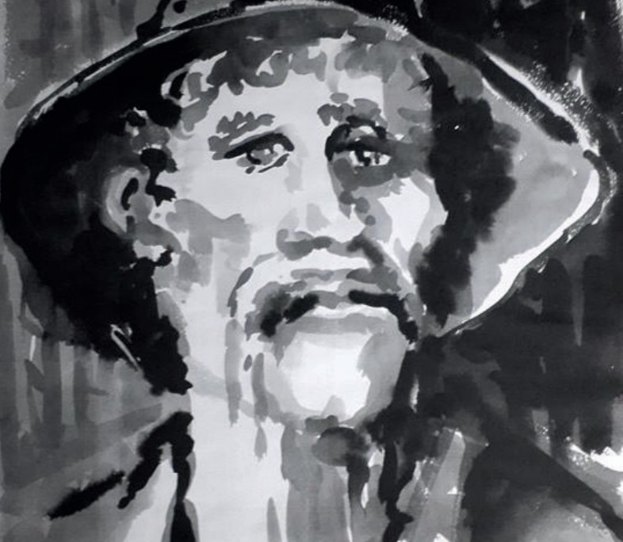

Créée en octobre 2020, l’Association Arts et traditions Populaires Géromois rend hommage à JEAN GROSSIER, fondateur des Ménestrels de Gérardmer, amoureux de ses Vosges natales, artiste, conteur, peintre, écrivain, dessinateur, chanteur, musicien, figure emblématique de l’identité culturelle et patrimoniale locales. Pour la création d’un Musée diversifié, riche de ses traditions, rejoignez-nous au 06 21 22 78 72 ou par mail à museejeangrossier@gmail.com